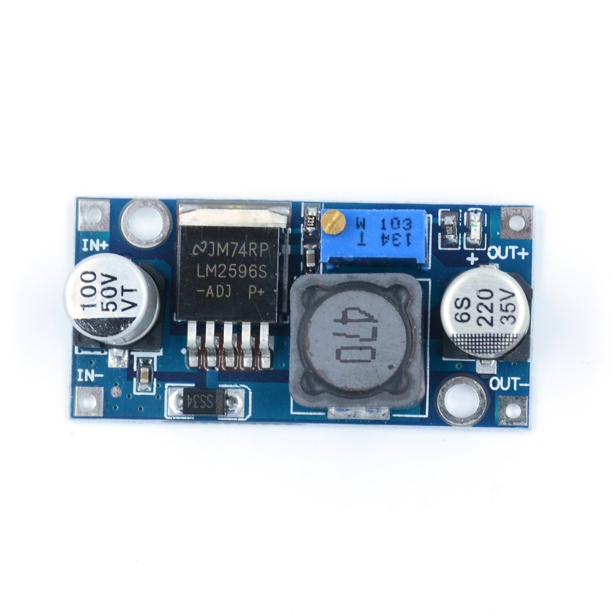

MINI PROJECT
Smart Blind Stick For Visually Impaired
INTRODUCTION
This project presents the development of a Blind Stick/OBSTACLES Detector using Esp32 and an Ultrasonic Distance Sensor. The aim of this system is to enhance the mobility and safety of visually impaired individuals by providing real-time feedback about obstacles in their proximity.
COMPONENTS
Esp32

ESP32 is a series of low-cost, low-power system on a chip microcontrollers with integrated Wi-Fi and dual-mode Bluetooth.
Arduino nano
The Arduino Nano is an open-source breadboard-friendly microcontroller board based on the Microchip ATmega328P microcontroller (MCU) and developed by Arduino.cc.
Ultrasonic Sensor
Ultrasonic sensors are common sensors to use in proximity sensing and distance measurement applications.
LM2596 Step Down Converter
A buck converter or step-down converter is a DC-to-DC converter which decreases voltage, while increasing current, from its input (supply) to its output (load).
NEO-6M GPS module with eprom
NEO-6M TTL GPS Module with EPROM is equipped with the latest technology from Ublox. It is done to give better positioning information and it includes a built-in 25x25mm active GPS antenna with a UART TTL socket.
SIM800L GPRS GSM module
SIM800L is a miniature cellular module which allows for GPRS transmission, sending and receiving SMS and making and receiving voice calls.
Buzzer
A buzzer or beeper is an audio signaling device, which may be mechanical, electromechanical, or piezoelectric (piezo for short).
Push button
physical button or switch integrated into a device or system that enables users to initiate or trigger specific actions.
CIRCUIT DIAGRAM
WORKING
A smart blind system, employing an ultrasonic sensor and GPS technology, orchestrates automated adjustments based on location and proximity. The GPS module continuously tracks the blind's whereabouts, while the ultrasonic sensor functions as a proximity detector, identifying nearby objects or individuals. Integrated into a microcontroller, programmed algorithms process GPS coordinates, determining the blind's relative distance from a predefined location, typically the user's home. When the system detects someone within a specified range via the ultrasonic sensor, and the GPS confirms proximity to the set location, it triggers actions tailored to user preferences. For instance, upon recognizing the user's approach to the residence, the system opens the blinds, welcoming natural light. Conversely, if the user leaves or no presence is detected, the blinds automatically close, enhancing security and optimizing energy conservation. This interconnected use of sensors and location-based data not only streamlines user comfort but also bolsters home security and energy efficiency. By adapting blind operations in response to location and presence cues, the system offers a seamless integration of technology into everyday living spaces. Moreover, this level of automation aligns with the burgeoning advancements in smart home technology, exemplifying the potential for IoT-driven solutions to harmonize with daily routines while optimizing resource utilization.
Code: Link to the code